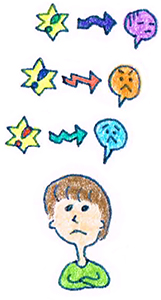

１１ : 考えのゆがみを発見しよう
・考えのゆがみを発見しよう

前回までに、認知行動療法の基礎として、・認知と感情をわける
・認知は暴走しやすいから
現実的に考え直す
という2点について学んできました。
今回はさらに学習を進めていきましょう。
今回は「自動思考」について学んでいきます。
「自動思考」とは
瞬時に浮かんでくる
「認知のクセ」のことです。
例えば
「友人に送ったメールの返信がこない。」
というときなら
・ 嫌われているのかもしれない
・ メールがつまらなかったのかも
など、とっさに頭に浮かんだ考えが「自動思考」です。
・よくある認知の歪みを覚えておこう
ここで大事なことは自動思考のゆがみ＝ゆがみ思考を
発見してチェックすることです。代表的な例は以下の通りです。
□白黒思考：物事を全て白か黒で極端にわけようとする考え方
「全てが完璧にできないと、私はダメな人間だ。」
□悲観的：うまくいくはずがない・・・など未来のことを悲観的に考える
「私なんてこの先も誰からも好かれない。」
□他人の考えを邪推する：「相手はこう考えている」と決めつけてしまう
「あの部下はやる気がない。」
□〜しなければならない（〜すべき）：〜すべきと考えて、できない自分を責める
「もう新人ではないのだから、しっかりしなければいけない。」
□ラベリング：自分や身近な人にネガティブな偏見を持つこと
「自分はつまらない人間だ」
□過小評価：うまくいかないことばかりに注目する。成功したことは忘れている。
「自分はいつだって人とうまく話せない。」
〔練習問題〕
・ストレスを感じる場面をいくつか考えてみて下さい。
―ストレスを感じる場面（例）―
1、 上司に怒られるとき
2、 飲み会の席で話せないとき
3、 1対1の会話で話が続かないとき
―ストレスを感じる場面―
1、
2、
3、
・次にその瞬間にどんなことを考えていたかを考えてみましょう。
―そのとき考えていたこと（例）―
1上司に怒られるとき→もっとしっかりやらなくてはいけない
2 飲み会の席で話せないとき→もっとたくさんの人と話すべきだった
3 1対1の会話で話が続かないとき→無言にならないようにしなくてはいけない
―そのとき考えていたことー
1、
2、
3、
考えていたことを参考にしながら
自分の思考パターンに当てはまるものを下記の項目から
選んでみましょう。
□白黒思考：
□悲観的：
□他人の考えを邪推する：
□〜しなければならない（〜すべき）：
□ラベリング：
□過小評価：
・ゆがみ思考に気がつけば改善が始まる
さて、みなさんはいくつか当てはまりましたか？
そして、自分はどんな思考パターンだったでしょうか？
このように私たちはストレスを感じる場面では
その人なりの感じ方のパターン（ゆがみの思考）があるのです。
ここで大事なことはまずは
ゆがみ思考にまずは気がつくと言う点です。
前回認知は暴走するとお伝えしましたが、
自分の思考がゆがんでいるかもなと気がつくだけで、
その暴走を止めることに役立ちます。
白黒思考になっちゃったかな？
他人の考えを邪推しすぎたかな？
そんな視点を持つように心がけましょう♪
 |
|